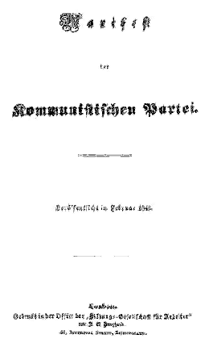
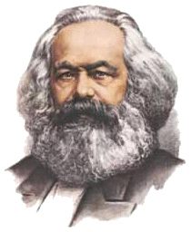
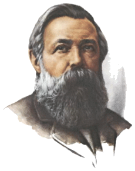
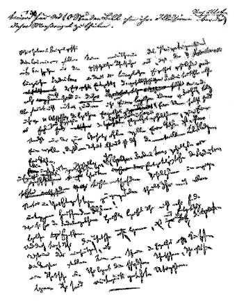
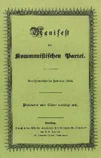

0.1Титульный лист первого издания «Манифеста Коммунистической партии»1
0.2Призрак бродит по Европе – призрак коммунизма. Все силы старой Европы объединились для священной травли этого призрака: папа и царь, Меттерних2 и Гизо3, французские радикалы и немецкие полицейские.
0.3Где та оппозиционная партия, которую ее противники, стоящие у власти, не ославили бы коммунистической? Где та оппозиционная партия, которая в свою очередь не бросала бы клеймящего обвинения в коммунизме как более передовым представителям оппозиции, так и своим реакционным противникам?
0.4Два вывода вытекают из этого факта.
0.5Коммунизм признается уже силой всеми европейскими силами.
0.6Пора уже коммунистам перед всем миром открыто изложить свои взгляды, свои цели, свои стремления и сказкам о призраке коммунизма противопоставить манифест самой партии.
0.7С этой целью в Лондоне собрались коммунисты самых различных национальностей и составили следующий «Манифест», который публикуется на английском, французском, немецком, итальянском, фламандском и датском языках.
1.1История всех до сих пор существовавших обществ5 была историей борьбы классов.
1.2Свободный и раб, патриций и плебей, помещик и крепостной, мастер6 и подмастерье, короче, угнетающий и угнетаемый находились в вечном антагонизме друг к другу, вели непрерывную, то скрытую, то явную борьбу, всегда кончавшуюся революционным переустройством всего общественного здания или общей гибелью борющихся классов.
1.3В предшествующие исторические эпохи мы находим почти повсюду полное расчленение общества на различные сословия, – целую лестницу различных общественных положений. В Древнем Риме мы встречаем патрициев, всадников, плебеев, рабов; в средние века – феодальных господ, вассалов, цеховых мастеров, подмастерьев, крепостных, и к тому же почти в каждом из этих классов – еще особые градации.
1.4Вышедшее из недр погибшего феодального общества современное буржуазное общество не уничтожило классовых противоречий. Оно только поставило новые классы, новые условия угнетения и новые формы борьбы на место старых.
1.5Наша эпоха, эпоха буржуазии, отличается, однако, тем, что она упростила классовые противоречия: общество все более и более раскалывается на два большие враждебные лагеря, на два большие, стоящие друг против друга, класса – буржуазию и пролетариат.
1.6Из крепостных средневековья вышло свободное население первых городов; из этого сословия горожан развились первые элементы буржуазии.
1.7Открытие Америки и морского пути вокруг Африки создало для подымающейся буржуазии новое поле деятельности. Ост-индский и китайский рынки, колонизация Америки, обмен с колониями, увеличение количества средств обмена и товаров вообще дали неслыханный до тех пор толчок торговле, мореплаванию, промышленности и тем самым вызвали в распадавшемся феодальном обществе быстрое развитие революционного элемента.
1.8Прежняя феодальная, или цеховая, организация промышленности более не могла удовлетворить спроса, возраставшего вместе с новыми рынками. Место ее заняла мануфактура. Цеховые мастера были вытеснены промышленным средним сословием; разделение труда между различными корпорациями исчезло, уступив место разделению труда внутри отдельной мастерской.
1.9Но рынки все росли, спрос все увеличивался. Удовлетворить его не могла уже и мануфактура. Тогда пар и машина произвели революцию в промышленности. Место мануфактуры заняла современная крупная промышленность, место промышленного среднего сословия заняли миллионеры-промышленники, предводители целых промышленных армий, современные буржуа.
1.10Крупная промышленность создала всемирный рынок, подготовленный открытием Америки. Всемирный рынок вызвал колоссальное развитие торговли, мореплавания и средств сухопутного сообщения. Это в свою очередь оказало воздействие на расширение промышленности, и в той же мере, в какой росли промышленность, торговля, мореплавание, железные дороги, развивалась буржуазия, она увеличивала свои капиталы и оттесняла на задний план все классы, унаследованные от средневековья.
1.11Мы видим, таким образом, что современная буржуазия сама является продуктом длительного процесса развития, ряда переворотов в способе производства и обмена.
1.12Каждая из этих ступеней развития буржуазии сопровождалась соответствующим политическим успехом. Угнетенное сословие при господстве феодалов, вооруженная и самоуправляющаяся ассоциация в коммуне7, тут – независимая городская республика, там – третье, податное сословие монархии8, затем, в период мануфактуры, – противовес дворянству в сословной или в абсолютной монархии и главная основа крупных монархий вообще, наконец, со времени установления крупной промышленности и всемирного рынка, она завоевала себе исключительное политическое господство в современном представительном государстве. Современная государственная власть – это только комитет, управляющий общими делами всего класса буржуазии.
1.13Буржуазия сыграла в истории чрезвычайно революционную роль.
1.14Буржуазия, повсюду, где она достигла господства, разрушила все феодальные, патриархальные, идиллические отношения. Безжалостно разорвала она пестрые феодальные путы, привязывавшие человека к его «естественным повелителям», и не оставила между людьми никакой другой связи, кроме голого интереса, бессердечного «чистогана». В ледяной воде эгоистического расчета потопила она священный трепет религиозного экстаза, рыцарского энтузиазма, мещанской сентиментальности. Она превратила личное достоинство человека в меновую стоимость и поставила на место бесчисленных пожалованных и благоприобретенных свобод одну бессовестную свободу торговли. Словом, эксплуатацию, прикрытую религиозными и политическими иллюзиями, она заменила эксплуатацией открытой, бесстыдной, прямой, черствой.
1.15Буржуазия лишила священного ореола все роды деятельности, которые до тех пор считались почетными и на которые смотрели с благоговейным трепетом. Врача, юриста, священника, поэта, человека науки она превратила в своих платных наемных работников.
1.16Буржуазия сорвала с семейных отношений их трогательно-сентиментальный покров и свела их к чисто денежным отношениям.
1.17Буржуазия показала, что грубое проявление силы в средние века, вызывающее такое восхищение у реакционеров, находило себе естественное дополнение в лени и неподвижности. Она впервые показала, чего может достигнуть человеческая деятельность. Она создала чудеса искусства, но совсем иного рода, чем египетские пирамиды, римские водопроводы и готические соборы; она совершила совсем иные походы, чем переселение народов и крестовые походы.
1.18Буржуазия не может существовать, не вызывая постоянно переворотов в орудиях производства, не революционизируя, следовательно, производственных отношений, а стало быть, и всей совокупности общественных отношений. Напротив, первым условием существования всех прежних промышленных классов было сохранение старого способа производства в неизменном виде. Беспрестанные перевороты в производстве, непрерывное потрясение всех общественных отношений, вечная неуверенность и движение отличают буржуазную эпоху от всех других. Все застывшие, покрывшиеся ржавчиной отношения, вместе с сопутствующими им, веками освященными представлениями и воззрениями, разрушаются, все возникающие вновь оказываются устарелыми, прежде чем успевают окостенеть. Все сословное и застойное исчезает, все священное оскверняется, и люди приходят, наконец, к необходимости взглянуть трезвыми глазами на свое жизненное положение и свои взаимные отношения.
1.19Потребность в постоянно увеличивающемся сбыте продуктов гонит буржуазию по всему земному шару. Всюду должна она внедриться, всюду обосноваться, всюду установить связи.
1.20Буржуазия путем эксплуатации всемирного рынка сделала производство и потребление всех стран космополитическим. К великому огорчению реакционеров она вырвала из-под ног промышленности национальную почву. Исконные национальные отрасли промышленности уничтожены и продолжают уничтожаться с каждым днем. Их вытесняют новые отрасли промышленности, введение которых становится вопросом жизни для всех цивилизованных наций, – отрасли, перерабатывающие уже не местное сырье, а сырье, привозимое из самых отдаленных областей земного шара, и вырабатывающие фабричные продукты, потребляемые не только внутри данной страны, но и во всех частях света. Вместо старых потребностей, удовлетворявшихся отечественными продуктами, возникают новые, для удовлетворения которых требуются продукты самых отдаленных стран и самых различных климатов. На смену старой местной и национальной замкнутости и существованию за счет продуктов собственного производства приходит всесторонняя связь и всесторонняя зависимость наций друг от друга. Это в равной мере относится как к материальному, так и к духовному производству. Плоды духовной деятельности отдельных наций становятся общим достоянием. Национальная односторонность и ограниченность становятся все более и более невозможными, и из множества национальных и местных литератур образуется одна всемирная литература.
1.21Буржуазия быстрым усовершенствованием всех орудий производства и бесконечным облегчением средств сообщения вовлекает в цивилизацию все, даже самые варварские, нации. Дешевые цены ее товаров – вот та тяжелая артиллерия, с помощью которой она разрушает все китайские стены и принуждает к капитуляции самую упорную ненависть варваров к иностранцам. Под страхом гибели заставляет она все нации принять буржуазный способ производства, заставляет их вводить у себя так называемую цивилизацию, т. е. становиться буржуа. Словом, она создает себе мир по своему образу и подобию.
1.22Буржуазия подчинила деревню господству города. Она создала огромные города, в высокой степени увеличила численность городского населения по сравнению с сельским и вырвала таким образом значительную часть населения из идиотизма деревенской жизни. Так же как деревню она сделала зависимой от города, так варварские и полуварварские страны она поставила в зависимость от стран цивилизованных, крестьянские народы – от буржуазных народов, Восток – от Запада.
1.23Буржуазия все более и более уничтожает раздробленность средств производства, собственности и населения. Она сгустила население, централизовала средства производства, концентрировала собственность в руках немногих. Необходимым следствием этого была политическая централизация. Независимые, связанные почти только союзными отношениями области с различными интересами, законами, правительствами и таможенными пошлинами, оказались сплоченными в одну нацию, с одним правительством, с одним законодательством, с одним национальным классовым интересом, с одной таможенной границей.
1.24Буржуазия менее чем за сто лет своего классового господства создала более многочисленные и более грандиозные производительные силы, чем все предшествовавшие поколения, вместе взятые. Покорение сил природы, машинное производство, применение химии в промышленности и земледелии, пароходство, железные дороги, электрический телеграф, освоение для земледелия целых частей света, приспособление рек для судоходства, целые, словно вызванные из-под земли, массы населения, – какое из прежних столетий могло подозревать, что такие производительные силы дремлют в недрах общественного труда!
1.25Итак, мы видели, что средства производства и обмена, на основе которых сложилась буржуазия, были созданы в феодальном обществе. На известной ступени развития этих средств производства и обмена отношения, в которых происходили производство и обмен феодального общества, феодальная организация земледелия и промышленности, одним словом, феодальные отношения собственности, уже перестали соответствовать развившимся производительным силам. Они тормозили производство, вместо того чтобы его развивать. Они превратились в его оковы. Их необходимо было разбить, и они были разбиты.

1.26Место их заняла свободная конкуренция, с соответствующим ей общественным и политическим строем, с экономическим и политическим господством класса буржуазии.
1.27Подобное же движение совершается на наших глазах. Современное буржуазное общество, с его буржуазными отношениями производства и обмена, буржуазными отношениями собственности, создавшее как бы по волшебству столь могущественные средства производства и обмена, походит на волшебника, который не в состоянии более справиться с подземными силами, вызванными его заклинаниями. Вот уже несколько десятилетий история промышленности и торговли представляет собой лишь историю возмущения современных производительных сил против современных производственных отношений, против тех отношений собственности, которые являются условием существования буржуазии и ее господства. Достаточно указать на торговые кризисы, которые, возвращаясь периодически, все более и более грозно ставят под вопрос существование всего буржуазного общества. Во время торговых кризисов каждый раз уничтожается значительная часть не только изготовленных продуктов, но даже созданных уже производительных сил. Во время кризисов разражается общественная эпидемия, которая всем предшествующим эпохам показалась бы нелепостью, – эпидемия перепроизводства. Общество оказывается вдруг отброшенным назад к состоянию внезапно наступившего варварства, как будто голод, всеобщая опустошительная война лишили его всех жизненных средств; кажется, что промышленность, торговля уничтожены, – и почему? Потому, что общество обладает слишком большой цивилизацией, имеет слишком много жизненных средств, располагает слишком большой промышленностью и торговлей. Производительные силы, находящиеся в его распоряжении, не служат более развитию буржуазных отношений собственности; напротив, они стали непомерно велики для этих отношений, буржуазные отношения задерживают их развитие; и когда производительные силы начинают преодолевать эти преграды, они приводят в расстройство все буржуазное общество, ставят под угрозу существование буржуазной собственности. Буржуазные отношения стали слишком узкими, чтобы вместить созданное ими богатство. – Каким путем преодолевает буржуазия кризисы? С одной стороны, путем вынужденного уничтожения целой массы производительных сил, с другой стороны, путем завоевания новых рынков и более основательной эксплуатации старых. Чем же, следовательно? Тем, что она подготовляет более всесторонние и более сокрушительные кризисы и уменьшает средства противодействия им.
1.28Оружие, которым буржуазия ниспровергла феодализм, направляется теперь против самой буржуазии.
1.29Но буржуазия не только выковала оружие, несущее ей смерть; она породила и людей, которые направят против нее это оружие, – современных рабочих, пролетариев.
1.30В той же самой степени, в какой развивается буржуазия, т. е. капитал, развивается и пролетариат, класс современных рабочих, которые только тогда и могут существовать, когда находят работу, а находят ее лишь до тех пор, пока их труд увеличивает капитал. Эти рабочие, вынужденные продавать себя поштучно, представляют собой такой же товар, как и всякий другой предмет торговли, а потому в равной мере подвержены всем случайностям конкуренции, всем колебаниям рынка.
1.31Вследствие возрастающего применения машин и разделения труда, труд пролетариев утратил всякий самостоятельный характер, а вместе с тем и всякую привлекательность для рабочего. Рабочий становится простым придатком машины, от него требуются только самые простые, самые однообразные, легче всего усваиваемые приемы. Издержки на рабочего сводятся поэтому почти исключительно к жизненным средствам, необходимым для его содержания и продолжения его рода. Но цена всякого товара, а следовательно и труда9, равна издержкам его производства. Поэтому в той же самой мере, в какой растет непривлекательность труда, уменьшается заработная плата. Больше того: в той же мере, в какой возрастает применение машин и разделение труда, возрастает и количество труда, за счет ли увеличения числа рабочих часов, или же вследствие увеличения количества труда, требуемого в каждый данный промежуток времени, ускорения хода машин и т. д.
1.32Современная промышленность превратила маленькую мастерскую патриархального мастера в крупную фабрику промышленного капиталиста. Массы рабочих, скученные на фабрике, организуются по-солдатски. Как рядовые промышленной армии, они ставятся под надзор целой иерархии унтер-офицеров и офицеров. Они – рабы не только класса буржуазии, буржуазного государства, ежедневно и ежечасно порабощает их машина, надсмотрщик и прежде всего сам отдельный буржуа-фабрикант. Эта деспотия тем мелочнее, ненавистнее, она тем больше ожесточает, чем откровеннее ее целью провозглашается нажива.
1.33Чем менее искусства и силы требует ручной труд, т. е. чем более развивается современная промышленность, тем более мужской труд вытесняется женским и детским. По отношению к рабочему классу различия пола и возраста утрачивают всякое общественное значение. Существуют лишь рабочие инструменты, требующие различных издержек в зависимости от возраста и пола.
1.34Когда заканчивается эксплуатация рабочего фабрикантом и рабочий получает, наконец, наличными свою заработную плату, на него набрасываются другие части буржуазии – домовладелец, лавочник, ростовщик и т. п.
1.35Низшие слои среднего сословия: мелкие промышленники, мелкие торговцы и рантье, ремесленники и крестьяне – все эти классы опускаются в ряды пролетариата, частью оттого, что их маленького капитала недостаточно для ведения крупных промышленных предприятий и он не выдерживает конкуренции с более крупными капиталистами, частью потому, что их профессиональное мастерство обесценивается в результате введения новых методов производства. Так рекрутируется пролетариат из всех классов населения.
1.36Пролетариат проходит различные ступени развития. Его борьба против буржуазии начинается вместе с его существованием.
1.37Сначала борьбу ведут отдельные рабочие, потом рабочие одной фабрики, затем рабочие одной отрасли труда в одной местности против отдельного буржуа, который их непосредственно эксплуатирует. Рабочие направляют свои удары не только против буржуазных производственных отношений, но и против самих орудий производства; они уничтожают конкурирующие иностранные товары, разбивают машины, поджигают фабрики, силой пытаются восстановить потерянное положение средневекового рабочего.
1.38На этой ступени рабочие образуют рассеянную по всей стране и раздробленную конкуренцией массу. Сплочение рабочих масс пока является еще не следствием их собственного объединения, а лишь следствием объединения буржуазии, которая для достижения своих собственных политических целей должна, и пока еще может, приводить в движение весь пролетариат. На этой ступени пролетарии борются, следовательно, не со своими врагами, а с врагами своих врагов – с остатками абсолютной монархии, землевладельцами, непромышленными буржуа, мелкими буржуа. Все историческое движение сосредоточивается, таким образом, в руках буржуазии; каждая одержанная в таких условиях победа является победой буржуазии.
1.39Но с развитием промышленности пролетариат не только возрастает численно; он скопляется в большие массы, сила его растет, и он все более ее ощущает. Интересы и условия жизни пролетариата все более и более уравниваются по мере того, как машины все более стирают различия между отдельными видами труда и почти всюду низводят заработную плату до одинаково низкого уровня. Возрастающая конкуренция буржуа между собою и вызываемые ею торговые кризисы ведут к тому, что заработная плата рабочих становится все неустойчивее; все быстрее развивающееся, непрерывное совершенствование машин делает жизненное положение пролетариев все менее обеспеченным; столкновения между отдельным рабочим и отдельным буржуа все более принимают характер столкновений между двумя классами. Рабочие начинают с того, что образуют коалиции10 против буржуа; они выступают сообща для защиты своей заработной платы. Они основывают даже постоянные ассоциации для того, чтобы обеспечить себя средствами на случай возможных столкновений. Местами борьба переходит в открытые восстания.
1.40Рабочие время от времени побеждают, но эти победы лишь преходящи. Действительным результатом их борьбы является не непосредственный успех, а все шире распространяющееся объединение рабочих. Ему способствуют все растущие средства сообщения, создаваемые крупной промышленностью и устанавливающие связь между рабочими различных местностей. Лишь эта связь и требуется для того, чтобы централизовать многие местные очаги борьбы, носящей повсюду одинаковый характер, и слить их в одну национальную, классовую борьбу. А всякая классовая борьба есть борьба политическая. И объединение, для которого средневековым горожанам с их проселочными дорогами требовались столетия, достигается современными пролетариями, благодаря железным дорогам, в течение немногих лет.
1.41Эта организация пролетариев в класс, и тем самым – в политическую партию, ежеминутно вновь разрушается конкуренцией между самими рабочими. Но она возникает снова и снова, становясь каждый раз сильнее, крепче, могущественнее. Она заставляет признать отдельные интересы рабочих в законодательном порядке, используя для этого раздоры между отдельными слоями буржуазии. Например, закон о десятичасовом рабочем дне в Англии.
1.42Вообще столкновения внутри старого общества во многих отношениях способствуют процессу развития пролетариата. Буржуазия ведет непрерывную борьбу: сначала против аристократии, позднее против тех частей самой же буржуазии, интересы которых приходят в противоречие с прогрессом промышленности, и постоянно – против буржуазии всех зарубежных стран. Во всех этих битвах она вынуждена обращаться к пролетариату, призывать его на помощь и вовлекать его таким образом в политическое движение. Она, следовательно, сама передает пролетариату элементы своего собственного образования11, т. е. оружие против самой себя.
1.43Далее, как мы видели, прогресс промышленности сталкивает в ряды пролетариата целые слои господствующего класса или, по крайней мере, ставит под угрозу условия их жизни. Они также приносят пролетариату большое количество элементов образования.
1.44Наконец, в те периоды, когда классовая борьба приближается к развязке, процесс разложения внутри господствующего класса, внутри всего старого общества принимает такой бурный, такой резкий характер, что небольшая часть господствующего класса отрекается от него и примыкает к революционному классу, к тому классу, которому принадлежит будущее. Вот почему, как прежде часть дворянства переходила к буржуазии, так теперь часть буржуазии переходит к пролетариату, именно – часть буржуа-идеологов, которые возвысились до теоретического понимания всего хода исторического движения.
1.45Из всех классов, которые противостоят теперь буржуазии, только пролетариат представляет собой действительно революционный класс. Все прочие классы приходят в упадок и уничтожаются с развитием крупной промышленности, пролетариат же есть ее собственный продукт.
1.46Средние сословия: мелкий промышленник, мелкий торговец, ремесленник и крестьянин – все они борются с буржуазией для того, чтобы спасти свое существование от гибели, как средних сословий. Они, следовательно, не революционны, а консервативны. Даже более, они реакционны: они стремятся повернуть назад колесо истории. Если они революционны, то постольку, поскольку им предстоит переход в ряды пролетариата, поскольку они защищают не свои настоящие, а свои будущие интересы, поскольку они покидают свою собственную точку зрения для того, чтобы встать на точку зрения пролетариата.
1.47Люмпен-пролетариат, этот пассивный продукт гниения самых низших слоев старого общества, местами вовлекается пролетарской революцией в движение, но в силу всего своего жизненного положения он гораздо более склонен продавать себя для реакционных козней.
1.48Жизненные условия старого общества уже уничтожены в жизненных условиях пролетариата. У пролетария нет собственности; его отношение к жене и детям не имеет более ничего общего с буржуазными семейными отношениями; современный промышленный труд, современное иго капитала, одинаковое как в Англии, так и во Франции, как в Америке, так и в Германии, стерли с него всякий национальный характер. Законы, мораль, религия – все это для него не более как буржуазные предрассудки, за которыми скрываются буржуазные интересы.
1.49Все прежние классы, завоевав себе господство, стремились упрочить уже приобретенное ими положение в жизни, подчиняя все общество условиям, обеспечивающим их способ присвоения. Пролетарии же могут завоевать общественные производительные силы, лишь уничтожив свой собственный нынешний способ присвоения, а тем самым и весь существовавший до сих пор способ присвоения в целом. У пролетариев нет ничего своего, что надо было бы им охранять, они должны разрушить все, что до сих пор охраняло и обеспечивало частную собственность.
1.50Все до сих пор происходившие движения были движениями меньшинства или совершались в интересах меньшинства. Пролетарское движение есть самостоятельное движение огромного большинства в интересах огромного большинства. Пролетариат, самый низший слой современного общества, не может подняться, не может выпрямиться без того, чтобы при этом не взлетела на воздух вся возвышающаяся над ним надстройка из слоев, образующих официальное общество.
1.51Если не по содержанию, то по форме борьба пролетариата против буржуазии является сначала борьбой национальной. Пролетариат каждой страны, конечно, должен сперва покончить со своей собственной буржуазией.
1.52Описывая наиболее общие фазы развития пролетариата, мы прослеживали более или менее прикрытую гражданскую войну внутри существующего общества вплоть до того пункта, когда она превращается в открытую революцию, и пролетариат основывает свое господство посредством насильственного ниспровержения буржуазии.

1.53Все доныне существовавшие общества основывались, как мы видели, на антагонизме между классами угнетающими и угнетенными. Но, чтобы возможно было угнетать какой-либо класс, необходимо обеспечить условия, при которых он мог бы влачить, по крайней мере, свое рабское существование. Крепостной в крепостном состоянии выбился до положения члена коммуны так же, как мелкий буржуа под ярмом феодального абсолютизма выбился до положения буржуа. Наоборот, современный рабочий с прогрессом промышленности не поднимается, а все более опускается ниже условий существования своего собственного класса. Рабочий становится паупером, и пауперизм растет еще быстрее, чем население и богатство. Это ясно показывает, что буржуазия неспособна оставаться долее господствующим классом общества и навязывать всему обществу условия существования своего класса в качестве регулирующего закона. Она неспособна господствовать, потому что неспособна обеспечить своему рабу даже рабского уровня существования, потому что вынуждена дать ему опуститься до такого положения, когда она сама должна его кормить, вместо того чтобы кормиться за его счет. Общество не может более жить под ее властью, т. е. ее жизнь несовместима более с обществом.
1.54Основным условием существования и господства класса буржуазии является накопление богатства в руках частных лиц, образование и увеличение капитала. Условием существования капитала является наемный труд. Наемный труд держится исключительно на конкуренции рабочих между собой. Прогресс промышленности, невольным носителем которого является буржуазия, бессильная ему сопротивляться, ставит на место разъединения рабочих конкуренцией революционное объединение их посредством ассоциации. Таким образом, с развитием крупной промышленности из-под ног буржуазии вырывается сама основа, на которой она производит и присваивает продукты. Она производит прежде всего своих собственных могильщиков. Ее гибель и победа пролетариата одинаково неизбежны.
2.1В каком отношении стоят коммунисты к пролетариям вообще?
2.2Коммунисты не являются особой партией, противостоящей другим рабочим партиям.
2.3У них нет никаких интересов, отдельных от интересов всего пролетариата в целом.
2.4Они не выставляют никаких особых12 принципов, под которые они хотели бы подогнать пролетарское движение.
2.5Коммунисты отличаются от остальных пролетарских партий лишь тем, что, с одной стороны, в борьбе пролетариев различных наций они выделяют и отстаивают общие, не зависящие от национальности интересы всего пролетариата; с другой стороны, тем, что на различных ступенях развития, через которые проходит борьба пролетариата с буржуазией, они всегда являются представителями интересов движения в целом.
2.6Коммунисты, следовательно, на практике являются самой решительной, всегда побуждающей к движению вперед13 частью рабочих партий всех стран, а в теоретическом отношении у них перед остальной массой пролетариата преимущество в понимании условий, хода и общих результатов пролетарского движения.
2.7Ближайшая цель коммунистов та же, что и всех остальных пролетарских партий: формирование пролетариата в класс, ниспровержение господства буржуазии, завоевание пролетариатом политической власти.
2.8Теоретические положения коммунистов ни в какой мере не основываются на идеях, принципах, выдуманных или открытых тем или другим обновителем мира.
2.9Они являются лишь общим выражением действительных отношений происходящей классовой борьбы, выражением совершающегося на наших глазах исторического движения. Уничтожение ранее существовавших отношений собственности не является чем-то присущим исключительно коммунизму.
2.10Все отношения собственности были подвержены постоянной исторической смене, постоянным историческим изменениям.
2.11Например, французская революция отменила феодальную собственность, заменив ее собственностью буржуазной.
2.12Отличительной чертой коммунизма является не отмена собственности вообще, а отмена буржуазной собственности.
2.13Но современная буржуазная частная собственность есть последнее и самое полное выражение такого производства и присвоения продуктов, которое держится на классовых антагонизмах, на эксплуатации одних другими.14
2.14В этом смысле коммунисты могут выразить свою теорию одним положением: уничтожение частной собственности.
2.15Нас, коммунистов, упрекали в том, что мы хотим уничтожить собственность, лично приобретенную, добытую своим трудом, собственность, образующую основу всякой личной свободы, деятельности и самостоятельности.
2.16Заработанная, благоприобретенная, добытая своим трудом собственность! Говорите ли вы о мелкобуржуазной, мелкокрестьянской собственности, которая предшествовала собственности буржуазной? Нам нечего ее уничтожать, развитие промышленности ее уничтожило и уничтожает изо дня в день.
2.17Или, быть может, вы говорите о современной буржуазной частной собственности?
2.18Но разве наемный труд, труд пролетария, создает ему собственность? Никоим образом. Он создает капитал, т. е. собственность, эксплуатирующую наемный труд, собственность, которая может увеличиваться лишь при условии, что она порождает новый наемный труд, чтобы снова его эксплуатировать. Собственность в ее современном виде движется в противоположности между капиталом и наемным трудом. Рассмотрим же обе стороны этой противоположности.
2.19Быть капиталистом – значит занимать в производстве не только чисто личное, но и общественное положение. Капитал – это коллективный продукт и может быть приведен в движение лишь совместной деятельностью многих членов общества, а в конечном счете – только совместной деятельностью всех членов общества.
2.20Итак, капитал – не личная, а общественная сила.
2.21Следовательно, если капитал будет превращен в коллективную, всем членам общества принадлежащую, собственность, то это не будет превращением личной собственности в общественную. Изменится лишь общественный характер собственности. Она потеряет свой классовый характер.
2.22Перейдем к наемному труду.
2.23Средняя цена наемного труда есть минимум заработной платы, т. е. сумма жизненных средств, необходимых для сохранения жизни рабочего как рабочего. Следовательно, того, что наемный рабочий присваивает в результате своей деятельности, едва хватает для воспроизводства его жизни. Мы вовсе не намерены уничтожить это личное присвоение продуктов труда, служащих непосредственно для воспроизводства жизни, присвоение, не оставляющее никакого избытка, который мог бы создать власть над чужим трудом. Мы хотим уничтожить только жалкий характер такого присвоения, когда рабочий живет только для того, чтобы увеличивать капитал, и живет лишь постольку, поскольку этого требуют интересы господствующего класса.
2.24В буржуазном обществе живой труд есть лишь средство увеличивать накопленный труд. В коммунистическом обществе накопленный труд – это лишь средство расширять, обогащать, облегчать жизненный процесс рабочих.
2.25Таким образом, в буржуазном обществе прошлое господствует над настоящим, в коммунистическом обществе – настоящее над прошлым. В буржуазном обществе капитал обладает самостоятельностью и индивидуальностью, между тем как трудящийся индивидуум лишен самостоятельности и обезличен.
2.26И уничтожение этих отношений буржуазия называет упразднением личности и свободы! Она права. Действительно, речь идет об упразднении буржуазной личности, буржуазной самостоятельности и буржуазной свободы.
2.27Под свободой, в рамках нынешних буржуазных производственных отношений, понимают свободу торговли, свободу купли и продажи.
2.28Но с падением торгашества падет и свободное торгашество. Разговоры о свободном торгашестве, как и все прочие высокопарные речи наших буржуа о свободе, имеют вообще смысл лишь по отношению к несвободному торгашеству, к порабощенному горожанину средневековья, а не по отношению к коммунистическому уничтожению торгашества, буржуазных производственных отношений и самой буржуазии.
2.29Вы приходите в ужас от того, что мы хотим уничтожить частную собственность. Но в вашем нынешнем обществе частная собственность уничтожена для девяти десятых его членов; она существует именно благодаря тому, что не существует для девяти десятых. Вы упрекаете нас, следовательно, в том, что мы хотим уничтожить собственность, предполагающую в качество необходимого условия отсутствие собственности у огромного большинства общества.
2.30Одним словом, вы упрекаете нас в том, что мы хотим уничтожить вашу собственность. Да, мы действительно хотим это сделать.
2.31С того момента, когда нельзя будет более превращать труд в капитал, в деньги, в земельную ренту, короче – в общественную силу, которую можно монополизировать, т. е. с того момента, когда личная собственность не сможет более превращаться в буржуазную собственность, – с этого момента, заявляете вы, личность уничтожена.
2.32Вы сознаетесь, следовательно, что личностью вы не признаете никого, кроме буржуа, т. е. буржуазного собственника. Такая личность действительно должна быть уничтожена.
2.33Коммунизм ни у кого не отнимает возможности присвоения общественных продуктов, он отнимает лишь возможность посредством этого присвоения порабощать чужой труд.
2.34Выдвигали возражение, будто с уничтожением частной собственности прекратится всякая деятельность и воцарится всеобщая леность.
2.35В таком случае буржуазное общество должно было бы давно погибнуть от лености, ибо здесь тот, кто трудится, ничего не приобретает, а тот, кто приобретает, не трудится. Все эти опасения сводятся к тавтологии, что нет больше наемного труда, раз не существует больше капитала.
2.36Все возражения, направленные против коммунистического способа присвоения и производства материальных продуктов, распространяются также на присвоение и производство продуктов умственного труда. Подобно тому как уничтожение классовой собственности представляется буржуа уничтожением самого производства, так и уничтожение классового образования для него равносильно уничтожению образования вообще.
2.37Образование, гибель которого он оплакивает, является для громадного большинства превращением в придаток машины.

2.38Страница черновика «Манифеста Коммунистической партии»
2.39(весь текст написан рукой Маркса, первые две строчки рукой Женни Маркс)
2.40Но не спорьте с нами, оценивая при этом отмену буржуазной собственности с точки зрения ваших буржуазных представлений о свободе, образовании, праве и т. д. Ваши идеи сами являются продуктом буржуазных производственных отношений и буржуазных отношений собственности, точно так же как ваше право есть лишь возведенная в закон воля вашего класса, воля, содержание которой определяется материальными условиями жизни вашего класса.
2.41Ваше пристрастное представление, заставляющее вас превращать свои производственные отношения и отношения собственности из отношений исторических, преходящих в процессе развития производства, в вечные законы природы и разума, вы разделяете со всеми господствовавшими прежде и погибшими классами. Когда заходит речь о буржуазной собственности, вы не смеете более понять того, что кажется вам понятным в отношении собственности античной или феодальной.
2.42Уничтожение семьи! Даже самые крайние радикалы возмущаются этим гнусным намерением коммунистов.
2.43На чем основана современная, буржуазная семья? На капитале, на частной наживе. В совершенно развитом виде она существует только для буржуазии; но она находит свое дополнение в вынужденной бессемейности пролетариев и в публичной проституции.
2.44Буржуазная семья естественно отпадает вместе с отпадением этого ее дополнения, и обе вместе исчезнут с исчезновением капитала.
2.45Или вы упрекаете нас в том, что мы хотим прекратить эксплуатацию детей их родителями? Мы сознаемся в этом преступлении.
2.46Но вы утверждаете, что, заменяя домашнее воспитание общественным, мы хотим уничтожить самые дорогие для человека отношения.
2.47А разве ваше воспитание не определяется обществом? Разве оно не определяется общественными отношениями, в которых вы воспитываете, не определяется прямым или косвенным вмешательством общества через школу и т. д.? Коммунисты не выдумывают влияния общества на воспитание; они лишь изменяют характер воспитания, вырывают его из-под влияния господствующего класса.
2.48Буржуазные разглагольствования о семье и воспитании, о нежных отношениях между родителями и детьми внушают тем более отвращения, чем более разрушаются все семейные связи в среде пролетариата благодаря развитию крупной промышленности, чем более дети превращаются в простые предметы торговли и рабочие инструменты.
2.49Но вы, коммунисты, хотите ввести общность жен, – кричит нам хором вся буржуазия.
2.50Буржуа смотрит на свою жену как на простое орудие производства. Он слышит, что орудия производства предполагается предоставить в общее пользование, и, конечно, не может отрешиться от мысли, что и женщин постигнет та же участь.
2.51Он даже и не подозревает, что речь идет как раз об устранении такого положения женщины, когда она является простым орудием производства.
2.52Впрочем, нет ничего смешнее высокоморального ужаса наших буржуа по поводу мнимой официальной общности жен у коммунистов. Коммунистам нет надобности вводить общность жен, она существовала почти всегда.
2.53Наши буржуа, не довольствуясь тем, что в их распоряжении находятся жены и дочери их рабочих, не говоря уже об официальной проституции, видят особое наслаждение в том, чтобы соблазнять жен друг у друга.
2.54Буржуазный брак является в действительности общностью жен. Коммунистам можно было бы сделать упрек разве лишь в том, будто они хотят ввести вместо лицемерно-прикрытой общности жен официальную, открытую. Но ведь само собой разумеется, что с уничтожением нынешних производственных отношений исчезнет и вытекающая из них общность жен, т. е. официальная и неофициальная проституция.
2.55Далее, коммунистов упрекают, будто они хотят отменить отечество, национальность.
2.56Рабочие не имеют отечества. У них нельзя отнять то, чего у них нет. Так как пролетариат должен прежде всего завоевать политическое господство, подняться до положения национального класса15, конституироваться как нация, он сам пока еще национален, хотя совсем не в том смысле, как понимает это буржуазия.
2.57Национальная обособленность и противоположности народов все более и более исчезают уже с развитием буржуазии, со свободой торговли, всемирным рынком, с единообразием промышленного производства и соответствующих ему условий жизни.
2.58Господство пролетариата еще более ускорит их исчезновение. Соединение усилий, по крайней мере цивилизованных стран, есть одно из первых условий освобождения пролетариата.
2.59В той же мере, в какой будет уничтожена эксплуатация одного индивидуума другим, уничтожена будет и эксплуатация одной нации другой.
2.60Вместе с антагонизмом классов внутри наций падут и враждебные отношения наций между собой.
2.61Обвинения против коммунизма, выдвигаемые с религиозных, философских и вообще идеологических точек зрения, не заслуживают подробного рассмотрения.
2.62Нужно ли особое глубокомыслие, чтобы понять, что вместо с условиями жизни людей, с их общественными отношениями, с их общественным бытием изменяются также и их представления, взгляды и понятия, – одним словом, их сознание?
2.63Что же доказывает история идей, как не то, что духовное производство преобразуется вместе с материальным? Господствующими идеями любого времени были всегда лишь идеи господствующего класса.
2.64Говорят об идеях, революционизирующих все общество; этим выражают лишь тот факт, что внутри старого общества образовались элементы нового, что рука об руку с разложением старых условий жизни идет и разложение старых идей.
2.65Когда древний мир клонился к гибели, древние религии были побеждены христианской религией. Когда христианские идеи в XVIII веке гибли под ударом просветительных идей, феодальное общество вело свой смертный бой с революционной в то время буржуазией. Идеи свободы совести и религии выражали в области знания лишь господство свободной конкуренции.
2.66«Но», скажут нам, «религиозные, моральные, философские, политические, правовые идеи и т. д., конечно, изменялись в ходе исторического развития. Религия же, нравственность, философия, политика, право всегда сохранялись в этом беспрерывном изменении.
2.67К тому же существуют вечные истины, как свобода, справедливость и т. д., общие всем стадиям общественного развития. Коммунизм же отменяет вечные истины, он отменяет религию, нравственность, вместо того чтобы обновить их; следовательно, он противоречит всему предшествовавшему ходу исторического развития».
2.68К чему сводится это обвинение? История всех доныне существовавших обществ двигалась в классовых противоположностях, которые в разные эпохи складывались различно.
2.69Но какие бы формы они ни принимали, эксплуатация одной части общества другою является фактом, общим всем минувшим столетиям. Неудивительно поэтому, что общественное сознание всех веков, несмотря на все разнообразие и все различия, движется в определенных общих формах, в формах сознания, которые вполне исчезнут лишь с окончательным исчезновением противоположности классов.
2.70Коммунистическая революция есть самый решительный разрыв с унаследованными от прошлого отношениями собственности; неудивительно, что в ходе своего развития она самым решительным образом порывает с идеями, унаследованными от прошлого.
2.71Оставим, однако, возражения буржуазии против коммунизма. Мы видели уже выше, что первым шагом в рабочей революции является превращение пролетариата в господствующий класс, завоевание демократии.
2.72Пролетариат использует свое политическое господство для того, чтобы вырвать у буржуазии шаг за шагом весь капитал, централизовать все орудия производства в руках государства, т. е. пролетариата, организованного как господствующий класс, и возможно более быстро увеличить сумму производительных сил.
2.73Это может, конечно, произойти сначала лишь при помощи деспотического вмешательства в право собственности и в буржуазные производственные отношения, т. е. при помощи мероприятий, которые экономически кажутся недостаточными и несостоятельными, но которые в ходе движения перерастают самих себя16 и неизбежны как средство для переворота во всем способе производства.
2.74Эти мероприятия будут, конечно, различны в различных странах.
2.75Однако в наиболее передовых странах могут быть почти повсеместно применены следующие меры:
2.761. Экспроприация земельной собственности и обращение земельной ренты на покрытие государственных расходов.
2.772. Высокий прогрессивный налог.
2.783. Отмена права наследования.
2.794. Конфискация имущества всех эмигрантов и мятежников.
2.805. Централизация кредита в руках государства посредством национального банка с государственным капиталом и с исключительной монополией.
2.816. Централизация всего транспорта в руках государства.
2.827. Увеличение числа государственных фабрик, орудий производства, расчистка под пашню и улучшение земель по общему плану.
2.838. Одинаковая обязательность труда для всех, учреждение промышленных армий, в особенности для земледелия.
2.849. Соединение земледелия с промышленностью, содействие постепенному устранению различия между городом и деревней.17
2.8510. Общественное и бесплатное воспитание всех детей. Устранение фабричного труда детей в современной его форме. Соединение воспитания с материальным производством и т. д.
2.86Когда в ходе развития исчезнут классовые различия и все производство сосредоточится в руках ассоциации индивидов, тогда публичная власть потеряет свой политический характер. Политическая власть в собственном смысле слова – это организованное насилие одного класса для подавления другого. Если пролетариат в борьбе против буржуазии непременно объединяется в класс, если путем революции он превращает себя в господствующий класс и в качестве господствующего класса силой упраздняет старые производственные отношения, то вместе с этими производственными отношениями он уничтожает условия существования классовой противоположности, уничтожает классы вообще, а тем самым и свое собственное господство как класса.
2.87На место старого буржуазного общества с его классами и классовыми противоположностями приходит ассоциация, в которой свободное развитие каждого является условием свободного развития всех.

2.88Обложка «Манифеста Коммунистической партии» издания 1848 года
2.89(выпуск на 30-ти страницах)
3.1.1Французская и английская аристократия по своему историческому положению была призвана к тому, чтобы писать памфлеты против современного буржуазного общества. Во французской июльской революции 1830 г. и в английском движении в пользу парламентской реформы ненавистный выскочка еще раз нанес ей поражение. О серьезной политической борьбе не могло быть больше и речи. Ей оставалась только литературная борьба. Но и в области литературы старые фразы времен Реставрации18 стали уже невозможны. Чтобы возбудить сочувствие, аристократия должна была сделать вид, что она уже не заботится о своих собственных интересах и составляет свой обвинительный акт против буржуазии только в интересах эксплуатируемого рабочего класса. Она доставляла себе удовлетворение тем, что сочиняла пасквили на своего нового властителя и шептала ему на ухо более или менее зловещие пророчества.
3.1.2Так возник феодальный социализм: наполовину похоронная песнь – наполовину пасквиль, наполовину отголосок прошлого – наполовину угроза будущего, подчас поражающий буржуазию в самое сердце своим горьким, остроумным, язвительным приговором, но всегда производящий комическое впечатление полной неспособностью понять ход современной истории.
3.1.3Аристократия размахивала нищенской сумой пролетариата как знаменем, чтобы повести за собою народ. Но всякий раз, когда он следовал за нею, он замечал на ее заду старые феодальные гербы и разбегался с громким и непочтительным хохотом.
3.1.4Разыгрыванием этой комедии занималась часть французских легитимистов и «Молодая Англия».19
3.1.5Если феодалы доказывают, что их способ эксплуатации был иного рода, чем буржуазная эксплуатация, то они забывают только, что они эксплуатировали при совершенно других, теперь уже отживших, обстоятельствах и условиях. Если они указывают, что при их господстве не существовало современного пролетариата, то забывают, что как раз современная буржуазия была необходимым плодом их общественного строя.
3.1.6Впрочем, они столь мало скрывают реакционный характер своей критики, что их главное обвинение против буржуазии именно в том и состоит, что при ее господстве развивается класс, который взорвет на воздух весь старый общественный порядок.
3.1.7Они гораздо больше упрекают буржуазию в том, что она порождает революционный пролетариат, чем в том, что она порождает пролетариат вообще.
3.1.8Поэтому в политической практике они принимают участие во всех насильственных мероприятиях против рабочего класса, а в обыденной жизни, вопреки всей своей напыщенной фразеологии, не упускают случая подобрать золотые яблоки20 и променять верность, любовь, честь на барыш от торговли овечьей шерстью, свекловицей и водкой.21
3.1.9Подобно тому как поп всегда шел рука об руку с феодалом, поповский социализм идет рука об руку с феодальным.
3.1.10Нет ничего легче, как придать христианскому аскетизму социалистический оттенок. Разве христианство не ратовало тоже против частной собственности, против брака, против государства? Разве оно не проповедовало вместо этого благотворительность и нищенство, безбрачие и умерщвление плоти, монастырскую жизнь и церковь? Христианский социализм – это лишь святая вода, которою поп кропит озлобление аристократа.
3.1.11Феодальная аристократия – не единственный ниспровергнутый буржуазией класс, условия жизни которого в современном буржуазном обществе ухудшались и отмирали. Средневековое сословие горожан и сословие мелких крестьян были предшественниками современной буржуазии. В странах, менее развитых в промышленном и торговом отношении, класс этот до сих пор еще прозябает рядом с развивающейся буржуазией.
3.1.12В тех странах, где развилась современная цивилизация, образовалась – и как дополнительная часть буржуазного общества постоянно вновь образуется – новая мелкая буржуазия, которая колеблется между пролетариатом и буржуазией. Но конкуренция постоянно сталкивает принадлежащих к этому классу лиц в ряды пролетариата, и они начинают уже видеть приближение того момента, когда с развитием крупной промышленности они совершенно исчезнут как самостоятельная часть современного общества и в торговле, промышленности и земледелии будут замещены надзирателями и наемными служащими.
3.1.13В таких странах, как Франция, где крестьянство составляет гораздо более половины всего населения, естественно было появление писателей, которые, становясь на сторону пролетариата против буржуазии, в своей критике буржуазного строя прикладывали к нему мелкобуржуазную и мелкокрестьянскую мерку и защищали дело рабочих с мелкобуржуазной точки зрения. Так возник мелкобуржуазный социализм. Сисмонди22 стоит во главе этого рода литературы не только во Франции, но и в Англии.
3.1.14Этот социализм прекрасно умел подметить противоречия в современных производственных отношениях. Он разоблачил лицемерную апологетику экономистов. Он неопровержимо доказал разрушительное действие машинного производства и разделения труда, концентрацию капиталов и землевладения, перепроизводство, кризисы, неизбежную гибель мелких буржуа и крестьян, нищету пролетариата, анархию производства, вопиющее неравенство в распределении богатства, истребительную промышленную войну наций между собой, разложение старых нравов, старых семейных отношений и старых национальностей.
3.1.15Но по своему положительному содержанию этот социализм стремится или восстановить старые средства производства и обмена, а вместе с ними старые отношения собственности и старое общество, или – вновь насильственно втиснуть современные средства производства и обмена в рамки старых отношений собственности, отношений, которые были уже ими взорваны и необходимо должны были быть взорваны. В обоих случаях он одновременно и реакционен и утопичен.
3.1.16Цеховая организация промышленности и патриархальное сельское хозяйство – вот его последнее слово.
3.1.17В дальнейшем своем развитии направление это вылилось в трусливое брюзжание.23
3.1.18Социалистическая и коммунистическая литература Франции, возникшая под гнетом господствующей буржуазии и являющаяся литературным выражением борьбы против этого господства, была перенесена в Германию в такое время, когда буржуазия там только что начала свою борьбу против феодального абсолютизма.
3.1.19Немецкие философы, полуфилософы и любители красивой фразы жадно ухватились за эту литературу, позабыв только, что с перенесением этих сочинений из Франции в Германию туда не были одновременно перенесены и французские условия жизни. В немецких условиях французская литература утратила все непосредственное практическое значение и приняла вид чисто литературного течения. Она должна была приобрести характер досужего мудрствования об осуществлении человеческой сущности. Так, требования первой французской революции для немецких философов XVIII века имели смысл лишь как требования «практического разума» вообще, а проявления воли революционной французской буржуазии в их глазах имели значение законов чистой воли, воли, какой она должна быть, истинно человеческой воли.
3.1.20Вся работа немецких литераторов состояла исключительно в том, чтобы примирить новые французские идеи со своей старой философской совестью или, вернее, в том, чтобы усвоить французские идеи со своей философской точки зрения.
3.1.21Это усвоение произошло таким же образом, каким вообще усваивают чужой язык, путем перевода.
3.1.22Известно, что на манускриптах, содержавших классические произведения языческой древности, монахи поверх текста писали нелепые жизнеописания католических святых. Немецкие литераторы поступили с нечестивой французской литературой как раз наоборот. Под французский оригинал они вписали свою философскую чепуху. Например, под французскую критику денежных отношений они вписали «отчуждение человеческой сущности», под французскую критику буржуазного государства – «упразднение господства Абстрактно-Всеобщего» и т. д.
3.1.23Это подсовывание под французские теории своей философской фразеологии они окрестили «философией действия», «истинным социализмом», «немецкой наукой социализма», «философским обоснованием социализма» и т. д.
3.1.24Французская социалистическо-коммунистическая литература была таким образом совершенно выхолощена. И так как в руках немца она перестала выражать борьбу одного класса против другого, то немец был убежден, что он поднялся выше «французской односторонности», что он отстаивает, вместо истинных потребностей, потребность в истине, а вместо интересов пролетариата – интересы человеческой сущности, интересы человека вообще, человека, который не принадлежит ни к какому классу и вообще существует не в действительности, а в туманных небесах философской фантазии.
3.1.25Этот немецкий социализм, считавший свои беспомощные ученические упражнения столь серьезными и важными и так крикливо их рекламировавший, потерял мало-помалу свою педантическую невинность.
3.1.26Борьба немецкой, особенно прусской, буржуазии против феодалов и абсолютной монархии – одним словом либеральное движение – становилась все серьезнее.
3.1.27«Истинному» социализму представился, таким образом, желанный случай противопоставить политическому движению социалистические требования, предавать традиционной анафеме либерализм, представительное государство, буржуазную конкуренцию, буржуазную свободу печати, буржуазное право, буржуазную свободу и равенство и проповедовать народной массе, что в этом буржуазном движении она не может ничего выиграть, но, напротив, рискует все потерять. Немецкий социализм весьма кстати забывал, что французская критика, жалким отголоском которой он был, предполагала современное буржуазное общество с соответствующими ему материальными условиями жизни и соответственной политической конституцией, т. е. как раз все те предпосылки, о завоевании которых в Германии только еще шла речь.
3.1.28Немецким абсолютным правительствам, с их свитой попов, школьных наставников, заскорузлых юнкеров и бюрократов, он служил кстати подвернувшимся пугалом против угрожающе наступавшей буржуазии.
3.1.29Он был подслащенным дополнением к горечи плетей и ружейных пуль, которыми эти правительства усмиряли восстания немецких рабочих.
3.1.30Если «истинный» социализм становился таким образом оружием в руках правительств против немецкой буржуазии, то он и непосредственно служил выражением реакционных интересов, интересов немецкого мещанства. В Германии действительную общественную основу существующего порядка вещей составляет мелкая буржуазия, унаследованная от XVI века и с того времени постоянно вновь появляющаяся в той или иной форме.
3.1.31Сохранение ее равносильно сохранению существующего в Германии порядка вещей. От промышленного и политического господства буржуазии она со страхом ждет своей верной гибели, с одной стороны, вследствие концентрации капитала, с другой – вследствие роста революционного пролетариата. Ей казалось, что «истинный» социализм одним выстрелом убивает двух зайцев. И «истинный» социализм распространялся как зараза.
3.1.32Вытканный из умозрительной паутины, расшитый причудливыми цветами красноречия, пропитанный слезами слащавого умиления, этот мистический покров, которым немецкие социалисты прикрывали пару своих тощих «вечных истин», только увеличивал сбыт их товара среди этой публики.
3.1.33Со своей стороны, немецкий социализм все более понимал свое призвание быть высокопарным представителем этого мещанства.
3.1.34Он провозгласил немецкую нацию образцовой нацией, а немецкого мещанина – образцом человека. Каждой его низости он придавал сокровенный, возвышенный социалистический смысл, превращавший ее в нечто ей совершенно противоположное. Последовательный до конца, он открыто выступал против «грубо-разрушительного» направления коммунизма и возвестил, что сам он в своем величественном беспристрастии стоит выше всякой классовой борьбы. За весьма немногими исключениями все, что циркулирует в Германии в качестве якобы социалистических и коммунистических сочинений, принадлежит к этой грязной, расслабляющей литературе.24
3.2.1Известная часть буржуазии желает излечить общественные недуги для того, чтобы упрочить существование буржуазного общества.
3.2.2Сюда относятся экономисты, филантропы, поборники гуманности, радетели о благе трудящихся классов, организаторы благотворительности, члены обществ покровительства животным, основатели обществ трезвости, мелкотравчатые реформаторы самых разнообразных видов. Этот буржуазный социализм разрабатывался даже в целые системы.
3.2.3В качестве примера приведем «Философию нищеты» Прудона.25
3.2.4Буржуа-социалисты хотят сохранить условия существования современного общества, но без борьбы и опасностей, которые неизбежно из них вытекают. Они хотят сохранить современное общество, однако, без тех элементов, которые его революционизируют и разлагают. Они хотели бы иметь буржуазию без пролетариата. Тот мир, в котором господствует буржуазия, конечно, кажется ей самым лучшим из миров. Буржуазный социализм разрабатывает это утешительное представление в более или менее цельную систему. Приглашая пролетариат осуществить его систему и войти в новый Иерусалим, он в сущности требует только, чтобы пролетариат оставался в теперешнем обществе, но отбросил свое представление о нем, как о чем-то ненавистном.
3.2.5Другая, менее систематическая, но более практическая форма этого социализма стремилась к тому, чтобы внушить рабочему классу отрицательное отношение ко всякому революционному движению, доказывая, что ему может быть полезно не то или другое политическое преобразование, а лишь изменение материальных условий жизни, экономических отношений. Однако под изменением материальных условий жизни этот социализм понимает отнюдь не уничтожение буржуазных производственных отношений, осуществимое только революционным путем, а административные улучшения, осуществляемые на почве этих производственных отношений, следовательно, ничего не изменяющие в отношениях между капиталом и наемным трудом, в лучшем же случае – лишь сокращающие для буржуазии издержки ее господства и упрощающие ее государственное хозяйство.
3.2.6Самое подходящее для себя выражение буржуазный социализм находит только тогда, когда превращается в простой ораторский оборот речи.
3.2.7Свободная торговля! в интересах рабочего класса; покровительственные пошлины! в интересах рабочего класса; одиночные тюрьмы! в интересах рабочего класса – вот последнее, единственно сказанное всерьез, слово буржуазного социализма.
3.2.8Социализм буржуазии заключается как раз в утверждении, что буржуа являются буржуа, – в интересах рабочего класса.
3.3.1Мы не говорим здесь о той литературе, которая во всех великих революциях нового времени выражала требования пролетариата (сочинения Бабёфа26 и т. д.).
3.3.2Первые попытки пролетариата непосредственно осуществить свои собственные классовые интересы во время всеобщего возбуждения, в период ниспровержения феодального общества, неизбежно терпели крушение вследствие неразвитости самого пролетариата, а также вследствие отсутствия материальных условий его освобождения, так как эти условия являются лишь продуктом буржуазной эпохи. Революционная литература, сопровождавшая эти первые движения пролетариата, по своему содержанию неизбежно является реакционной. Она проповедует всеобщий аскетизм и грубую уравнительность.
3.3.3Собственно социалистические и коммунистические системы, системы Сен-Симона27, Фурье28, Оуэна29 и т. д., возникают в первый, неразвитый период борьбы между пролетариатом и буржуазией, изображенный нами выше (см. «Буржуазия и пролетариат»).
3.3.4Изобретатели этих систем, правда, видят противоположность классов, так же как и действие разрушительных элементов внутри самого господствующего общества. Но они не видят на стороне пролетариата никакой исторической самодеятельности, никакого свойственного ему политического движения.
3.3.5Так как развитие классового антагонизма идет рука об руку с развитием промышленности, то они точно так же не могут еще найти материальных условий освобождения пролетариата и ищут такой социальной науки, таких социальных законов, которые создали бы эти условия.
3.3.6Место общественной деятельности должна занять их личная изобретательская деятельность, место исторических условий освобождения – фантастические условия, место постепенно подвигающейся вперед организации пролетариата в класс – организация общества по придуманному ими рецепту. Дальнейшая история всего мира сводится для них к пропаганде и практическому осуществлению их общественных планов.
3.3.7Правда, они сознают, что в этих своих планах защищают главным образом интересы рабочего класса как наиболее страдающего класса. Только в качестве этого наиболее страдающего класса и существует для них пролетариат.
3.3.8Однако неразвитая форма классовой борьбы, а также их собственное положение в жизни приводят к тому, что они считают себя стоящими высоко над этим классовым антагонизмом. Они хотят улучшить положение всех членов общества, даже находящихся в самых лучших условиях. Поэтому они постоянно апеллируют ко всему обществу без различия и даже преимущественно – к господствующему классу. По их мнению, достаточно только понять их систему, чтобы признать ее самым лучшим планом самого лучшего из возможных обществ.
3.3.9Они отвергают поэтому всякое политическое, и в особенности всякое революционное, действие; они хотят достигнуть своей цели мирным путем и пытаются посредством мелких и, конечно, не удающихся опытов, силой примера проложить дорогу новому общественному евангелию.
3.3.10Это фантастическое описание будущего общества возникает в то время, когда пролетариат еще находится в очень неразвитом состоянии и представляет себе поэтому свое собственное положение еще фантастически, оно возникает из первого исполненного предчувствий порыва пролетариата к всеобщему преобразованию общества.
3.3.11Но в этих социалистических и коммунистических сочинениях содержатся также и критические элементы. Эти сочинения нападают на все основы существующего общества. Поэтому они дали в высшей степени ценный материал для просвещения рабочих. Их положительные выводы насчет будущего общества, например, уничтожение противоположности между городом и деревней30, уничтожение семьи, частной наживы, наемного труда, провозглашение общественной гармонии, превращение государства в простое управление производством, – все эти положения выражают лишь необходимость устранения классовой противоположности, которая только что начинала развиваться и была известна им лишь в ее первичной бесформенной неопределенности. Поэтому и положения эти имеют еще совершенно утопический характер.
3.3.12Значение критически-утопического социализма и коммунизма стоит в обратном отношении к историческому развитию. По мере того как развивается и принимает все более определенные формы борьба классов, это фантастическое стремление возвыситься над ней, это преодоление ее фантастическим путем лишается всякого практического смысла и всякого теоретического оправдания. Поэтому, если основатели этих систем и были во многих отношениях революционны, то их ученики всегда образуют реакционные секты. Они крепко держатся старых воззрений своих учителей, невзирая на дальнейшее историческое развитие пролетариата. Поэтому они последовательно стараются вновь притупить классовую борьбу и примирить противоположности. Они все еще мечтают об осуществлении, путем опытов, своих общественных утопий, об учреждении отдельных фаланстеров, об основании внутренних колоний31, об устройстве маленькой Икарии32 – карманного издания нового Иерусалима, – и для сооружения всех этих воздушных замков вынуждены обращаться к филантропии буржуазных сердец и кошельков. Они постепенно опускаются в категорию описанных выше реакционных или консервативных социалистов, отличаясь от них лишь более систематическим педантизмом и фанатической верой в чудодейственную силу своей социальной науки.
3.3.13Вот почему они с ожесточением выступают против всякого политического движения рабочих, вызываемого, по их мнению, лишь слепым неверием в новое евангелие.
3.3.14Оуэнисты в Англии и фурьеристы во Франции выступают – первые против чартистов, вторые против реформистов.33
4.1После того, что было сказано в разделе II, понятно отношение коммунистов к сложившимся уже рабочим партиям, т. е. их отношение к чартистам в Англии и к сторонникам аграрной реформы в Северной Америке.
4.2Коммунисты борются во имя ближайших целей и интересов рабочего класса, но в то же время в движении сегодняшнего дня они отстаивают и будущность движения. Во Франции, в борьбе против консервативной и радикальной буржуазии, коммунисты примыкают к социалистическо-демократической партии34, не отказываясь тем не менее от права относиться критически к фразам и иллюзиям, проистекающим из революционной традиции.
4.3В Швейцарии они поддерживают радикалов, не упуская, однако, из виду, что эта партия состоит из противоречивых элементов, частью из демократических социалистов во французском стиле, частью из радикальных буржуа.
4.4Среди поляков коммунисты поддерживают партию, которая ставит аграрную революцию условием национального освобождения, ту самую партию, которая вызвала краковское восстание 1846 года.
4.5В Германии, поскольку буржуазия выступает революционно, коммунистическая партия борется вместе с ней против абсолютной монархии, феодальной земельной собственности и реакционного мещанства.
4.6Но ни на минуту не перестает она вырабатывать у рабочих возможно более ясное сознание враждебной противоположности между буржуазией и пролетариатом, чтобы немецкие рабочие могли сейчас же использовать общественные и политические условия, которые должно принести с собой господство буржуазии, как оружие против нее же самой, чтобы, сейчас же после свержения реакционных классов в Германии, началась борьба против самой буржуазии.
4.7На Германию коммунисты обращают главное свое внимание потому, что она находится накануне буржуазной революции, потому, что она совершит этот переворот при более прогрессивных условиях европейской цивилизации вообще, с гораздо более развитым пролетариатом, чем в Англии XVII и во Франции XVIII столетия. Немецкая буржуазная революция, следовательно, может быть лишь непосредственным прологом пролетарской революции.
4.8Одним словом, коммунисты повсюду поддерживают всякое революционное движение, направленное против существующего общественного и политического строя.
4.9Во всех этих движениях они выдвигают на первое место вопрос о собственности, как основной вопрос движения, независимо от того, принял ли он более или менее развитую форму.
4.10Наконец, коммунисты повсюду добиваются объединения и соглашения между демократическими партиями всех стран.
4.11Коммунисты считают презренным делом скрывать свои взгляды и намерения. Они открыто заявляют, что их цели могут быть достигнуты лишь путем насильственного ниспровержения всего существующего общественного строя. Пусть господствующие классы содрогаются перед Коммунистической Революцией. Пролетариям нечего в ней терять кроме своих цепей. Приобретут же они весь мир.
4.12ПРОЛЕТАРИИ ВСЕХ СТРАН, СОЕДИНЯЙТЕСЬ!